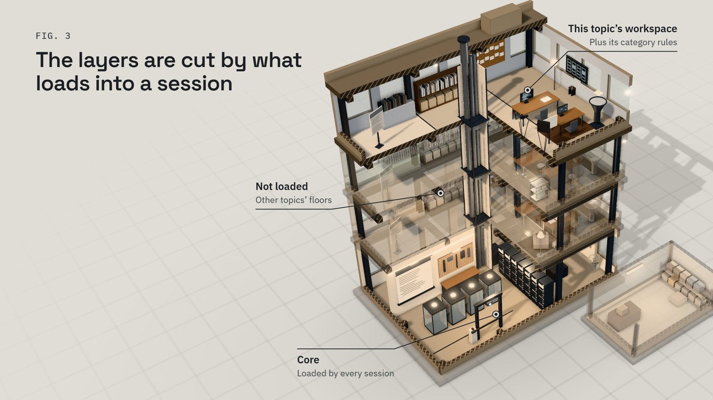
Article · English
An AI workflow that lives in documents never reaches the work
About 2,500 words (about 11 minutes to read), with four figures.
An AI workflow written only as documents never reaches the moment of work. Install it instead into the moments where work happens — session start, project init, review, and wrap-up — and let every finished task send its lesson back to the narrowest layer where it actually repeated.


About 2,500 words (about 11 minutes to read), with four figures.
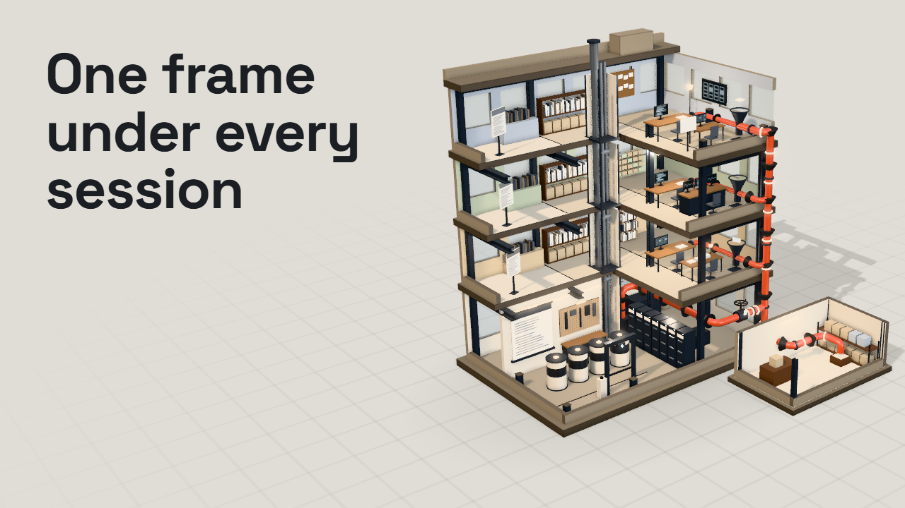
About 3 minutes. The same structure, narrated over the figures and the 3D model. English and Korean versions, both with captions.
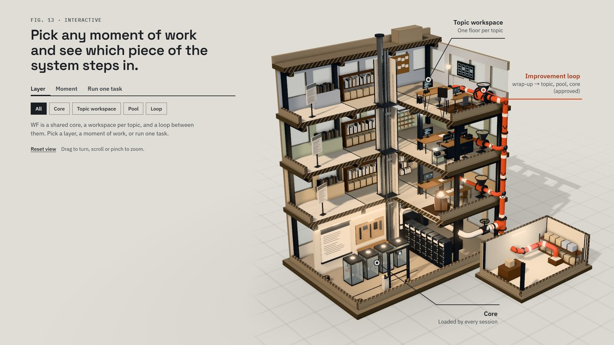
Turn the cut-away building, focus one layer, pick a moment of a session, or run one task through the improvement loop. Works on a phone.

1920×1080, one PDF, plus each slide as an image below.

The same argument in the same order, on one page, in Korean.
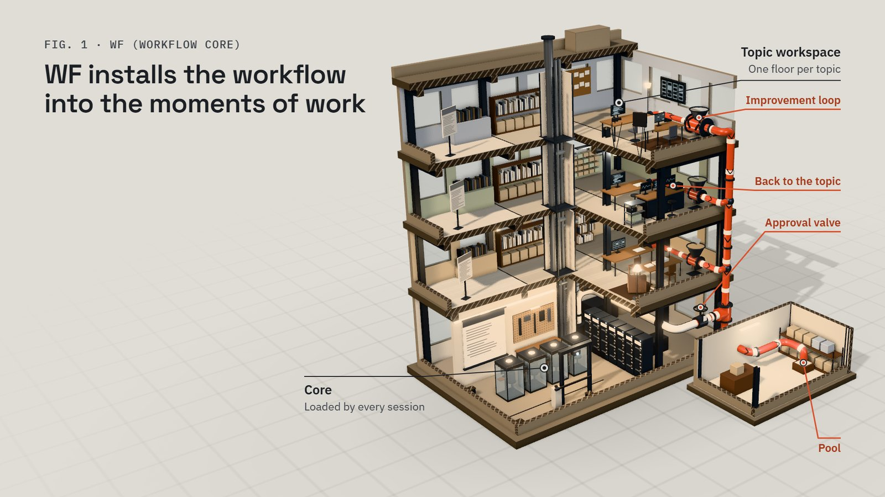
S01 · WF installs the workflow into the moments of work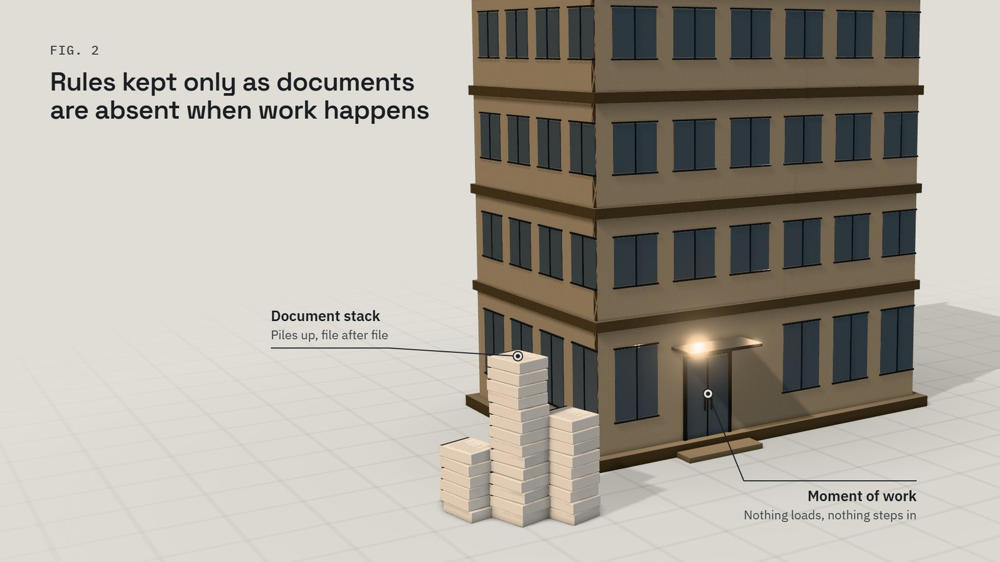
S02 · Rules kept only as documents are absent when work happens S03 · The layers are cut by what loads into a session S04 · Every session loads the same five-piece core
S04 · Every session loads the same five-piece core
 S05 · Each of nine moments has a fixed piece that steps in
S05 · Each of nine moments has a fixed piece that steps in
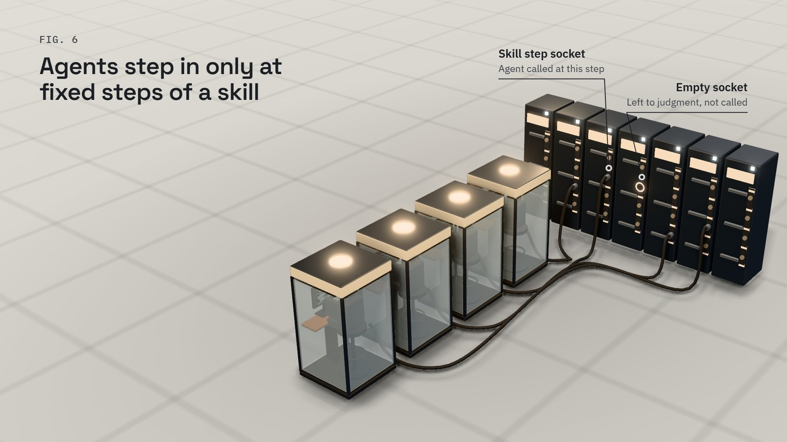
S06 · Agents step in only at fixed steps of a skill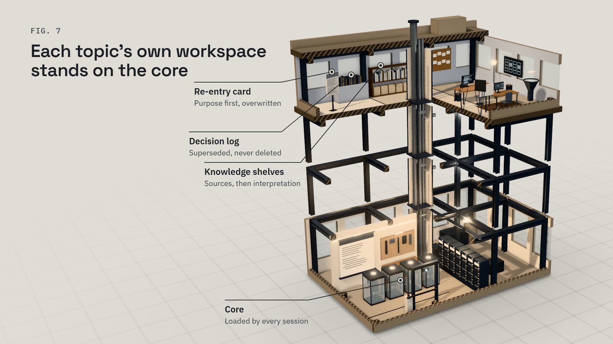
S07 · Each topic's own workspace stands on the core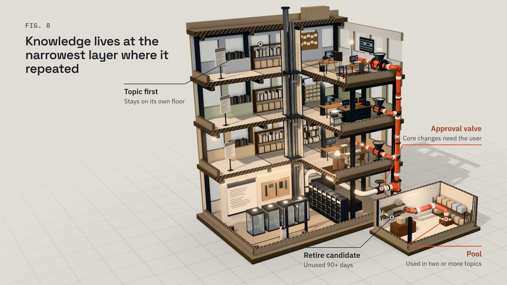
S08 · Knowledge lives at the narrowest layer where it repeated S09 · Finished work flows back to its topic, the pool, or the core
S09 · Finished work flows back to its topic, the pool, or the core
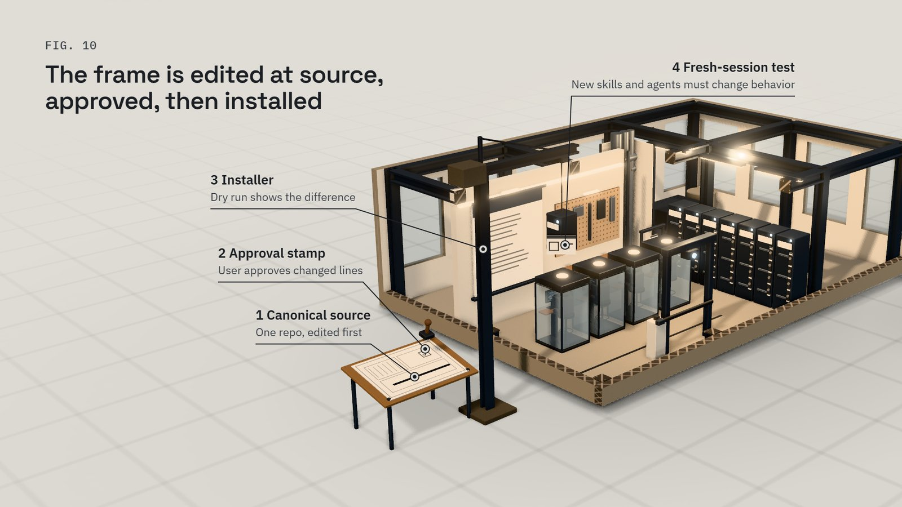
S10 · The frame is edited at source, approved, then installed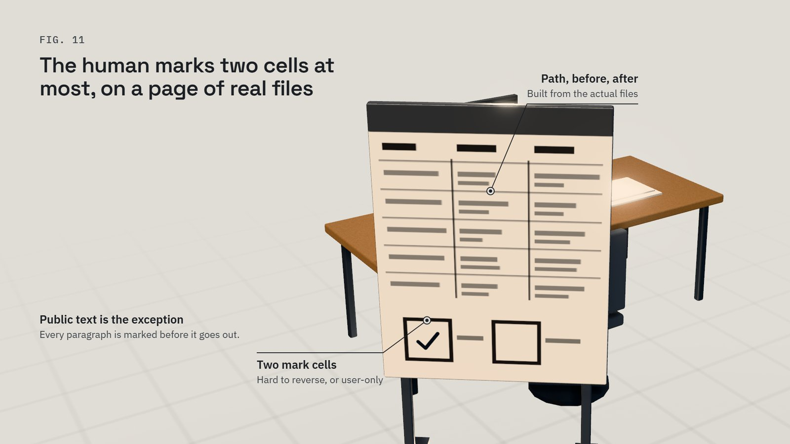
S11 · The human marks two cells at most, on a page of real files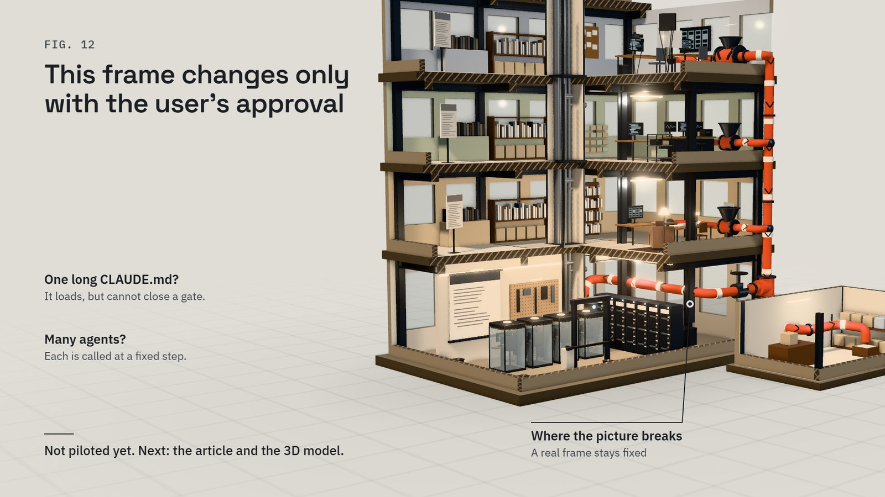
S12 · This frame changes only with the user’s approvalMade with Claude Code: the text, figures, slides, 3D model and videos were produced by AI agents from the author's design notes, then checked by separate review agents and by the author. The video narration is a synthetic voice (local text-to-speech).
Third-party: three.js (MIT), IBM Plex and Space Grotesk fonts (SIL Open Font License 1.1); license files sit next to each library.